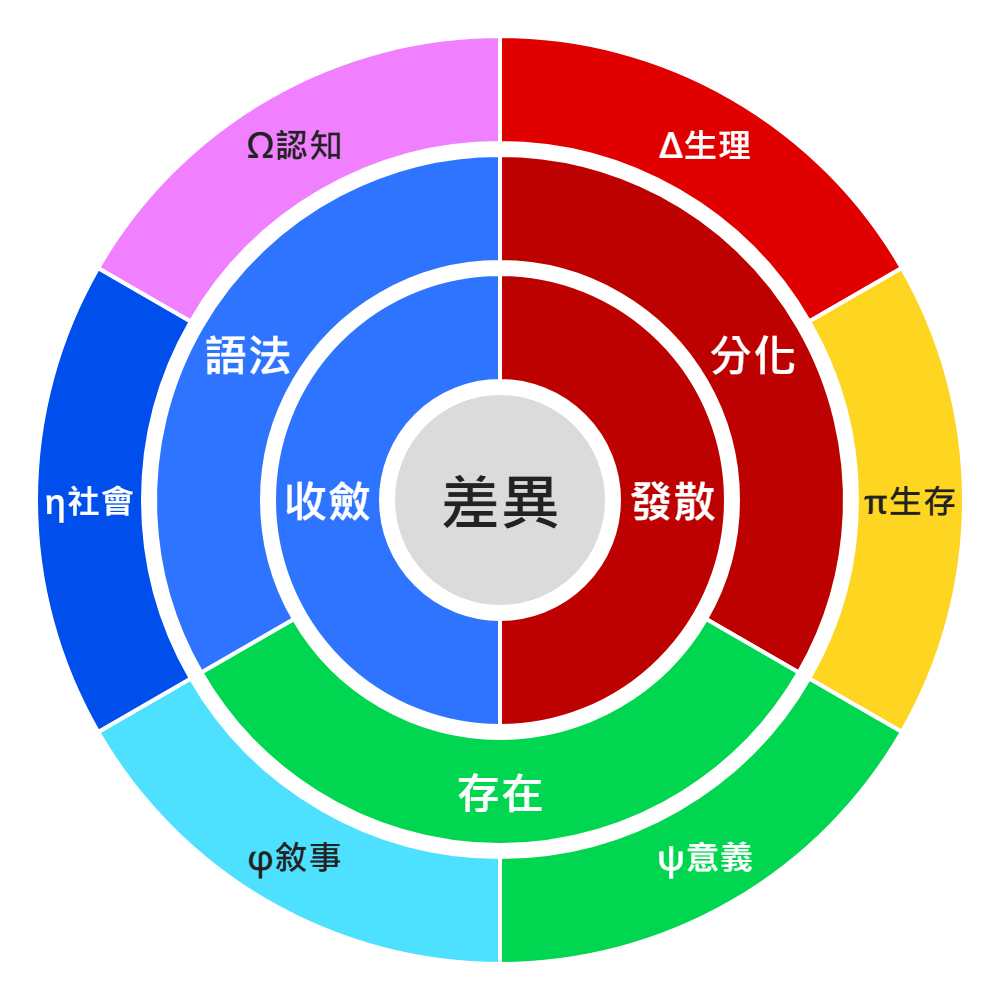

不是玩笑
「小屁」是差異被觀測後外翻出來的最小可見表面；小屁論研究它如何被觀測、投影、反投影並生成意義。

「小屁」是差異被觀測後外翻出來的最小可見表面；小屁論研究它如何被觀測、投影、反投影並生成意義。
沒有差異，就沒有相對；沒有相對，就沒有投影、判斷、交換與生成。差異是世界能被分辨和運算的最小條件。
人不是只做單一選擇，而是在生理、生存、意義、敘事、社會與認知之間，最大化某種利的組合。
Start Here
如果你第一次看到小屁論，可以先不要急著把它當成正式學科或完整理論。比較好的讀法，是把它當成一張正在長大的地圖：它用一些有點怪的名字，去標記那些平常很難抓住的東西。
小屁論最底層的問題是「差異」。一件事會被注意到，是因為它和別的東西不一樣；一個人會開始行動，是因為某個差異被感覺成值得、危險、有趣、痛苦或有意義。差異不是內容本身，而是世界開始可以被分辨的條件。
差異出現以後，下一步是偏壓。偏壓不是貶義，它比較像方向、重量和限制：同一個刺激，對不同人、不同情境、不同記憶，會形成不同的傾斜。於是有些路變得容易，有些路變得困難，有些路甚至還沒開始就被排除。
當偏壓繼續展開，小屁論會把它整理成三光譜與六利。三光譜是在問：變化怎麼發生，狀態怎麼維持，結構怎麼被組織。六利則更貼近日常：身體累不累、環境安不安全、情緒和意義值不值得、故事能不能接上、人在關係裡站不站得住、世界觀能不能穩定。
所以小屁論不是只在玩名詞。它其實是在問：為什麼人會這樣選？為什麼一件事會讓人想靠近，另一件事會讓人想逃？為什麼有些想法會長成創作，有些想法會長成防衛，有些語法甚至會開始像生命一樣運作？
網站目前先分成兩層。這一頁是總覽，讓你知道小屁論的核心生成鏈；下面的版本頁則是每一段理論長到哪裡的簡短導覽。你不需要一次讀完，可以先從 1.0 看人怎麼行動，也可以直接跳到你有興趣的語意場、語法生命、比值語法或 GSE。
Core Chain
Six Interests
系統維持能量、材料與運作成本。人的例子是疲勞、飢餓、舒服或身體負荷。
系統評估風險、邊界與持續存在的可能。人的例子是安全感、資源、穩定與避險。
系統判斷某個狀態是否值得連結、投入或保存。人的例子是喜歡、珍惜、使命感與情緒價值。
系統把事件接成時間線，維持前後因果與身份連續。人的例子是人生故事、角色感與記憶脈絡。
系統處理位置、規則、協作與外部承認。人的例子是面子、歸屬、責任、制度與關係排序。
系統壓縮資訊、建立模型並穩定世界觀。人的例子是理解、學習、掌握、Meta 視角與概念清晰。
Behavior Loop
Version Overview
差異起點、小屁圈、小小屁圈、小屁四兄弟、性利論、光屁股學，以及惡魔種子、絞殺樹、屁噗態等早期生成支線。
進入把 1-2-3-6、偏壓、三光譜、TOE / TOES / metaTOE 放進可推演的語意結構裡。
進入進入量子曲線、語意 PDE、語意場與自我函數前段背景，開始處理概念如何變形與流動。
進入把敘事力學、宏觀語意物理、甜甜圈與心智光刻接成 3.0 到 5.0 之間的橋。
進入先收成生命條件、生命型態、時間湧現與跳階，也延伸到自我函數、語法心智生命和爆音風險。
進入以 π、交換率、比值語法、幾何、曲率與母公理為主，處理比例如何成為心智、語言、生命與智能生成的底層語法。
進入從粒子不是小球，而是向外展開的力與向量出發，推進到六界迴圈同構與語法統一場論。
進入以 Grand Syntax Equation 和閉合反射模型為核心，把宇宙、心智與 AI 放進共同母方程的候選版本。
進入小屁論還在生長中。
這裡先作為閱讀入口，讓每個版本有一個可以回來對照的位置。
備註：我沒有數學專業與背景；若網站中出現公式，皆為 AI 推論與補充。